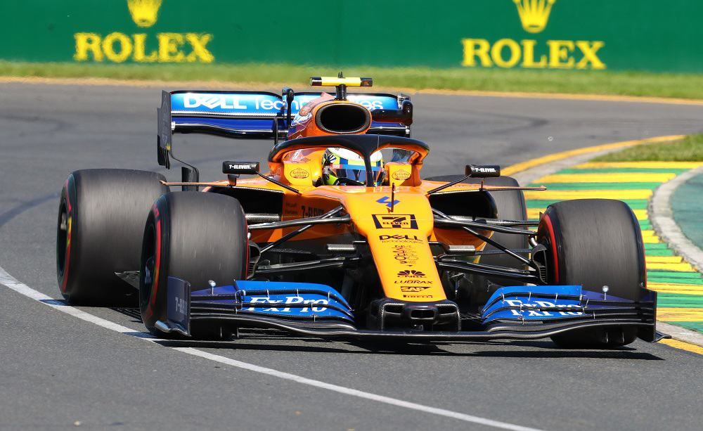

Lando Norris è nato a Bristol il 13 novembre 1999, è un pilota automobilistico britannico, attivo in Formula 1 con la McLaren. Prima di approdare nella massima serie, si è fatto notare conquistando l'Eurocup Formula Renault 2.0 nel 2016 e la F3 europea nel 2017. Dopo una sola stagione in Formula 2, al 2º posto, dal 2019 corre in Formula 1. Il suo numero di gara è il 4. Il 3 settembre 2018 viene annunciato il suo ingaggio come pilota ufficiale del team McLaren per la stagione 2019, in sostituzione di Stoffel Vandoorne e al fianco di Carlos Sainz Jr. La monoposto inglese si dimostra abbastanza competitiva e permette a Norris e al compagno di squadra di competere stabilmente per la zona punti. Al debutto, in Australia, si qualifica ottavo, ottenendo un dodicesimo posto in gara. Nel successivo Gran Premio del Bahrein il pilota britannico coglie un sesto posto, ottenendo i suoi primi punti in Formula 1. Nelle gare seguenti arrivano i primi ritiri per il britannico: in Cina è protagonista di un contatto al primo giro con Daniil Kvjat, in Spagna è costretto al ritiro da una collisione con Lance Stroll, mentre in Canada non conclude la gara per il cedimento di una sospensione. In Austria eguaglia il suo miglior piazzamento, arrivando sesto. Nonostante una buona serie di piazzamenti utili, i due sesti posti restano il miglior risultato stagionale; nel Gran Premio del Belgio Norris mantiene a lungo la quinta posizione, ma deve ritirarsi all'inizio dell'ultimo giro per un guasto meccanico, venendo comunque classificato undicesimo e venendo votato Driver of the Day dal pubblico. Norris ottiene tre piazzamenti a punti consecutivi ai Gran Premi d'Italia, di Singapore e Russia. In Giappone deve rinunciare ai punti dopo un incidente con Alexander Albon mentre i due lottavano per la quinta posizione. Al Gran Premio del Messico è vittima di un altro inconveniente: per via di un fissaggio errato di una ruota l'inglese trascorre più di due minuti ai box, e successivamente si ritirerà dalla gara. Nelle ultime tre gare ottiene altrettanti piazzamenti a punti, con un settimo e due ottavi posti. Norris chiude la stagione all'undicesimo posto assoluto, con 49 punti.  Il pilota britannico viene riconfermato dalla McLaren anche per la stagione 2020. Nel Gran Premio d'esordio in Austria Norris si qualifica al quarto posto, ottenendo il suo miglior risultato in carriera. Scattato dal terzo posto grazie ad una penalità per Lewis Hamilton, conferma il piazzamento anche in gara, scalzando dal podio lo stesso Hamilton, soggetto a penalità di 5 secondi, e diventando il terzo pilota più giovane della storia ad ottenere un podio. Norris fa anche registrare il primo giro veloce in carriera nell'ultima tornata del Gran Premio. Pur non riuscendo a ripetere il podio della gara inaugurale, nelle otto gare seguenti Norris giunge quasi sempre in zona punti: la sola eccezione è il Gran Premio d'Ungheria, nel quale taglia il traguardo al tredicesimo posto, mentre il miglior risultato arriva nel caotico Gran Premio d'Italia, che Norris chiude quarto. La serie di risultati utili si interrompe nel Gran Premio di Russia, nel quale Norris taglia il traguardo in quindicesima posizione, dopo aver danneggiato la vettura su dei detriti nel corso del primo giro. Anche le due gare seguenti non portano risultati utili: nel Gran Premio dell'Eifel Norris è costretto al ritiro per un problema meccanico, mentre in Portogallo la gara del pilota inglese è condizionata da un contatto con Lance Stroll. Norris torna a marcare punti nel Gran Premio dell'Emilia-Romagna, nel quale taglia il traguardo in ottava posizione; il pilota inglese bissa il risultato nel successivo Gran Premio di Turchia, nel quale fa segnare anche il giro più veloce, chiudendo invece al quarto posto il Gran Premio del Bahrein. Norris giunge in zona punti anche nei conclusivi Gran Premi di Sakhir e Abu Dhabi, chiudendo la stagione al nono posto assoluto con 97 punti e permettendo alla McLaren di raggiungere il terzo posto in classifica costruttori. Confermato dalla McLaren, per il 2021 Norris viene affiancato da Daniel Ricciardo. Inizia la stagione con un quarto posto nel Gran Premio del Bahrein, dopo essere scattato dalla settima posizione in griglia di partenza. Nella seconda gara, a Imola, viene penalizzato in qualifica per essere uscito dai limiti del tracciato, venendo retrocesso dal terzo al settimo posto. La domenica Norris risale in terza posizione, conquistando il secondo podio in carriera. Il mercoledì prima del weekend del Gran Premio di Monaco la McLaren annuncia un prolungamento pluriennale del contratto di Norris. In gara il pilota inglese arriva terzo dietro al suo ex compagno di team Carlos Sainz Jr. e al vincitore Max Verstappen. Nelle tre gare successive, disputate a Baku, al Paul Ricard e in Stiria, Norris conclude quinto, consolidando la sua quarta posizione in campionato piloti. Nelle qualifiche del Gran Premio d'Austria segna il secondo tempo, suo miglior risultato in carriera; in gara riesce a tenere il passo delle Mercedes e chiude al terzo posto. Grazie al quarto posto nel successivo Gran Premio di Gran Bretagna Norris sale in terza posizione nel campionato piloti e realizza un nuovo record, diventando il primo pilota della storia della McLaren a concludere 15 gare a punti di fila. La striscia positiva si interrompe già nel gran premio seguente, in cui Norris si ritira al primo giro dopo essere stato tamponato da Valtteri Bottas. Dopo altre due gare avare di soddisfazioni in Belgio e in Olanda, Norris torna a podio nel Gran Premio d'Italia, dove arriva secondo dietro al compagno di squadra Daniel Ricciardo, completando una doppietta per la McLaren. Due settimane dopo, in Russia, conquista sul bagnato la sua prima pole position in carriera davanti a Carlos Sainz Jr. e George Russell. Dopo aver trascorso gran parte della gara in prima posizione, commette l'errore di non rientrare tempestivamente ai box per montare gomme da bagnato all'arrivo della pioggia, tagliando il traguardo soltanto in settima posizione ma conquistando comunque il punto del giro veloce. Nelle ultime gare della stagione Norris giunge sempre in zona punti, ma deve accontentarsi delle posizioni di rincalzo per via di diversi contrattempi. In Messico giunge decimo dopo essere stato retrocesso in diciottesima posizione sulla griglia di partenza,[38] mentre a San Paolo e in Qatar viene rallentato da delle forature; in Arabia Saudita è penalizzato dall'interruzione della corsa con la bandiera rossa, che consente a molti rivali di effettuare il cambio gomme senza perdere tempo, mentre nell'ultima gara ad Abu Dhabi è nuovamente vittima di una foratura, dovendo accontentarsi del settimo posto al traguardo dopo essere scattato terzo. Per via dei risultati meno positivi nell'ultima parte di stagione Norris viene superato in classifica da Carlos Sainz e Sergio Pérez, chiudendo la stagione al sesto posto con 160 punti, 45 in più rispetto al compagno di squadra Ricciardo.